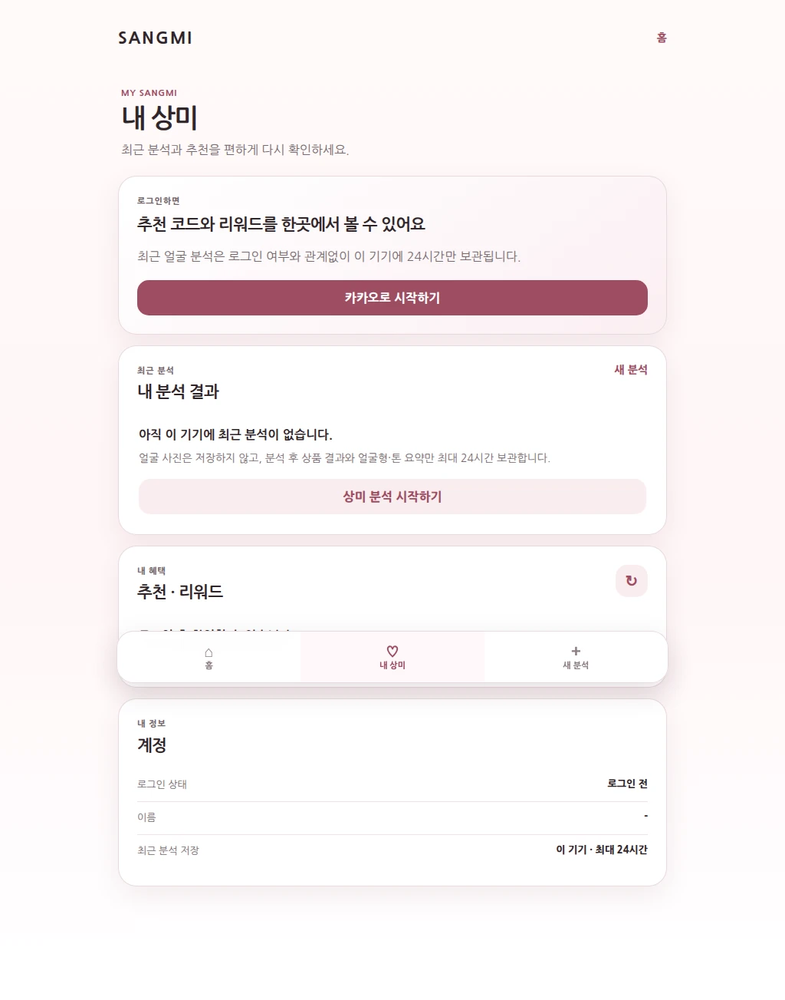
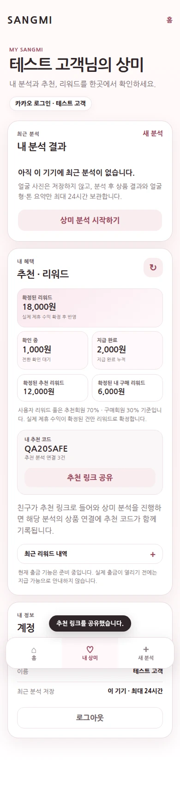

제작·성장·개인화
상미
SANGMI
내 얼굴의 매력을 읽고, 나에게 맞는 스타일을 찾다.
사진 속 얼굴선과 분위기, 사용자가 선택한 피부 정보와 스타일 취향을 바탕으로 맞춤 뷰티·그루밍, 상품과 콘텐츠를 연결하는 서비스입니다.


회원 화면의 이름·계정·리워드 값은 테스트용 예시이며, 실제 고객 정보나 실적이 아닙니다.
핵심 기능
- 사진 품질 확인
- 얼굴선 기반 스타일 참고
- 사용자가 선택하는 피부·취향 정보
- K-FACE 스타일링 이야기
- 맞춤 뷰티·그루밍 추천
- 콘텐츠·상품 탐색
이용 흐름
- STEP 01사진 확인정면도·밝기·초점과 얼굴 윤곽을 기기에서 확인합니다.
- STEP 02내 정보 더하기피부 타입과 고민, 오늘 원하는 분위기는 사용자가 직접 선택합니다.
- STEP 03맞춤 결과K-FACE 이야기와 판매 상품, 실전 영상을 순서대로 보여줍니다.
우리가 지키는 원칙
의료 진단, 건강·성격·운명·재물 판단, 외모 등급 매기기, 성별·민감정보 추정 서비스가 아닙니다. K-FACE는 재미와 스타일링을 위한 얼굴선 이야기입니다. 서비스 페이지는 공개되어 있지만, 분석·상품·보상 기능은 기능별로 검증을 이어가고 있습니다. 사용 전·후 이미지는 가상 스타일링 미리보기 예시입니다.
상미의 확장 개발 · 개발 중
상미 스타일 버전
상미 스타일 버전
상미의 스타일 확장 프로젝트 (가제)
상미 ↳ 스타일 버전 — 취향·착용감 + 옷장 + 날씨·일정 조건 → 코디·뷰티 연결 → 보관·재활용.
상미의 뷰티·그루밍 방향을 바탕으로, 직접 선택한 취향과 착용감, 옷장, 날씨·일정 조건을 함께 고려해 화장부터 오늘의 코디까지 연결하는 스타일 버전을 개발하고 있습니다.
사진만으로 사람을 단정하기보다 사용자가 고른 취향과 편안함을 우선하고, 새로 사기 전에 이미 가진 옷을 더 잘 활용하도록 돕는 개인화 스타일링을 지향합니다.
체험판에서 확인할 수 있는 화면
아직 실제로 연결하지 않은 것
자동 얼굴 분석 · 실시간 날씨 · 실제 상품 검색 · 상품 가격·재고·옵션 · 카카오 로그인 · 계정 동기화 · 결제 · 리워드는 아직 연결되지 않았습니다.
화면의 날씨·기온·지역·이동 조건은 사용자가 바꿔보는 예시이며, 기상청 실시간 연동이나 위치 자동 수집이 아닙니다.
현재 코디는 규칙 기반 구성 예시이며, 인공지능이 얼굴을 분석해 추천한 결과가 아닙니다.
입력한 예산은 조건일 뿐 실제 가격 합계가 그 예산에 맞는다고 검증된 것이 아닙니다.
평소 사이즈는 상품별 사이즈 보장이나 얼굴 사진을 통한 신체 치수 측정이 아닙니다.
화면의 날씨·기온·지역·이동 조건은 사용자가 바꿔보는 예시이며, 기상청 실시간 연동이나 위치 자동 수집이 아닙니다.
현재 코디는 규칙 기반 구성 예시이며, 인공지능이 얼굴을 분석해 추천한 결과가 아닙니다.
입력한 예산은 조건일 뿐 실제 가격 합계가 그 예산에 맞는다고 검증된 것이 아닙니다.
평소 사이즈는 상품별 사이즈 보장이나 얼굴 사진을 통한 신체 치수 측정이 아닙니다.
개인정보·표현 기준
사진 없이도 시작할 수 있는 방향을 유지합니다. 얼굴에서 성별·성격·운명·건강·신체 치수를 추측하지 않습니다.
관상 표현이 등장하더라도 재미와 스타일링 참고 범위를 넘지 않습니다.
현재 체험판은 입력 정보를 외부로 전송하지 않으며, 이후 운영 버전의 보안 정책은 별도로 안내합니다.